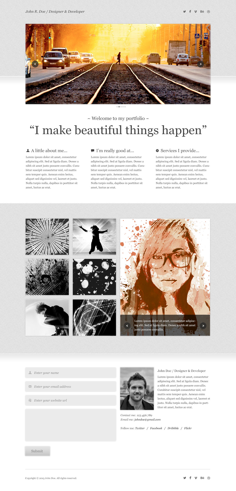

Олег Грицак
HTML-верстальщик
Качества
Положительные: ответственность, усидчивость, быстрая обучаемость, интерес к новым технологиям.
Отрицательные: большая внимательность к деталям (иногда во вред скорости)
Цели
В течении 1-1.5 лет стать front-end разработчиком. Далее больше времени уделять изучению back-end технологий, для того чтобы в итоге стать full-stack.
Хобби
- Изучение WEB-технологий
- Чтение книг на английском
- Просмотр сериалов и фильмов на английском
- Игры ПК на английском

Обо мне
WEB разработкой я начал интересоваться с мая 2016 и до теперь. В течении этого времени у меня накопилось небольшое портфолио. Это бесплатные PSD макеты свёрстанные лично мной без посторонней поддержки( в лице людей, без google конечно не обошлось =) ).
Так же с марта 2016 до мая 2016 я активно изучал английский, и с того времени весь досуг(просмотр фильмов и сериалов, чтение книг, ПК игры) я провожу на английском языке. Таким образом, пытаюсь погрузить себя в мини среду языка.
Всем этим я хочу сказать: у меня нет намерений стоять на месте, а есть только желание развиваться и двигаться вперед во всех возможных направлениях.
Мои навыки
HTML/CSS на достаточном высоком уровне. Проблемы с версткой возникают не часто, а те что возникают решаються.
Практические навыки JavaScript не на очеь высоком уровне. Могу написать слайдер, галерею. Пока процесс написания кода идет не так легко как верстка но работа в этом направлении идет.
jQuery аналогично JavaScript. Собственно, одно тесно связано с другим. =)
Прошел несколько видеокурсов. Макет Take натягивал на WordPress.
Upper-Intermediate
HTML/CSS
JavaScript
jQuery
WordPress
English
Резюме
К сожалению, нет ещё опыта работы в данной сфере. Но есть огромное желание начать работать, заниматься интересными проектами, набираться опыта как технологий так и командной работы.
скачать резюмеОбразование
Быть студентом: интересный этап для многих кто это проходит. Я не являюсь исключением. Хоть и наша система высшего образования не идеальна, но университет дал мне много опыта в обычных жизненных ситуациях. И много приятных воспоминаний.
Национальный Авиационный Университет
09.2010 / 02.2016
5 лет 5 месяцевКомпьютерно-интегрированные технологические процессы и производства
Величайшее чувственное наслаждение, которое не содержит в себе никакой примеси и отвращения, — это, в здоровом состоянии, отдых после работы.
Кант И.
Выбери профессию, которую ты любишь, — и тебе не придется работать ни дня в твоей жизни.
Конфуций
Думать — вот самая тяжёлая работа и поэтому мало кто за неё берётся.
Генри Форд
Портфолио
Работы делались по бесплатным PSD-макетам, лично мной. Все работы адаптивные.
Polo 360
Моя 1-ая работа. Работа шла очень медленно и неуверенно. Особые сложности возникли со слайдером, так как к тому времени знания JavaScript были только базовыми. А также опыта правильно подключать готовые решения и переделывать их стиль под нужный ещё не было. Но в результате получилась рабочая, адаптивня верстка. Время выполнения: 3 недели.

WG Portfolio
2-ая работа. Уже немного осоившись работа пошла бистрее. Сложности возникли с слайдерами, в связи с недостаточными знаниями JavaScript. Время выполнения: 2 недели.
